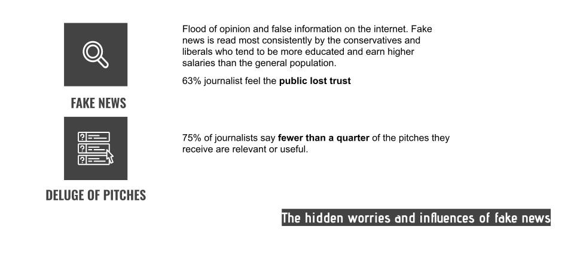
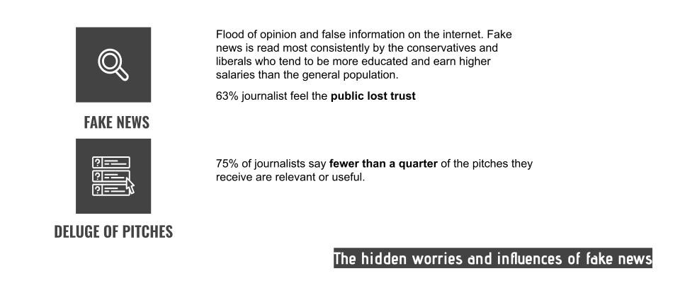

IDA project
Year: 2020
Focus: UX research
Skills: Qualitative research, Persona, Customer Journey Map, Competitive Analysis
It's a Microsoft Azure IDA UX analysis project. Insights and Discovery Accelerator, or IDA, is the first AI-powered platform for journalists and publishers from Microsoft Azure. We are able to analyze journalism materials like articles and videos by extracting key data as well as identifying keywords and footage transcript in video with IDA. We collaborated with the employees in Microsoft IDA team to discover the potential of this platform.
Research Topic
In what ways can we use different AI and ML techniques to continue to build out IDA pipeline processing?
My role
UX Research
Research

 

Customer Journey Map

Needs and painpoints
Needs
Creating a well-researched, contextualized report in a short period of time.
Painpoints
- It's time-consuming to manage data
- False information might be included
- Lack of accessibility
Competitive analysis

Improvement suggetions